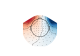

mne_icalabel.gui.label_ica_components#
- mne_icalabel.gui.label_ica_components(inst, ica, show=True, block=False)#
Launch the IC labelling GUI.
- Parameters:
- Returns:
- guiinstance of ICAComponentLabeler
The graphical user interface (GUI) window.
Examples using mne_icalabel.gui.label_ica_components#

Labeling ICA components with a GUI
Labeling ICA components with a GUI